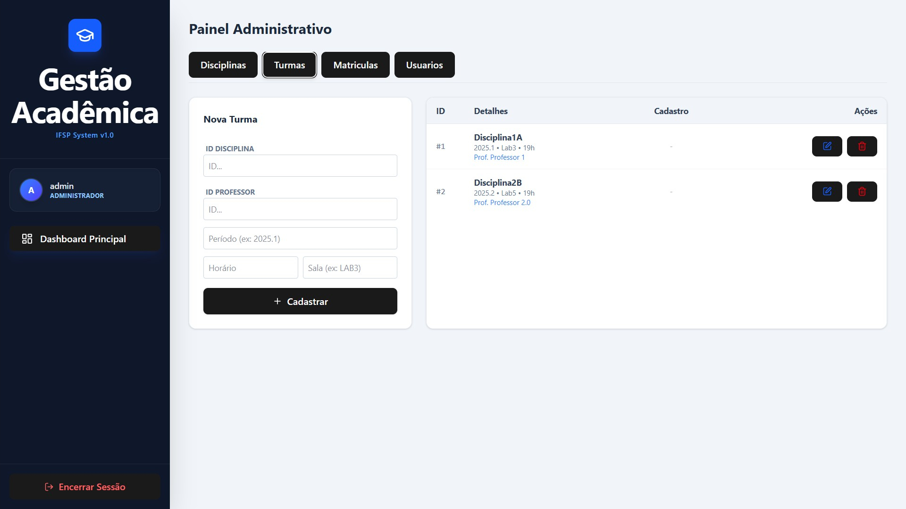
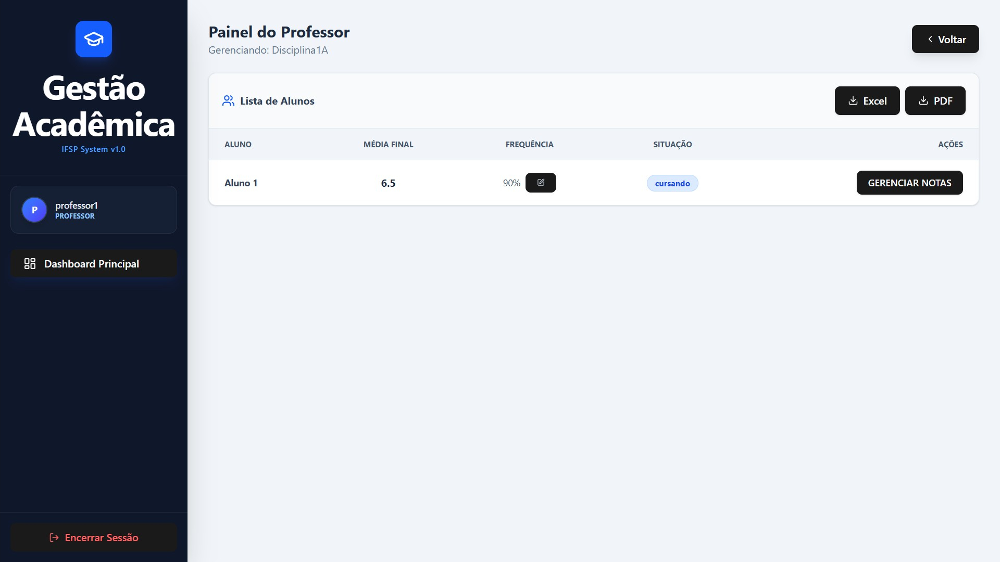
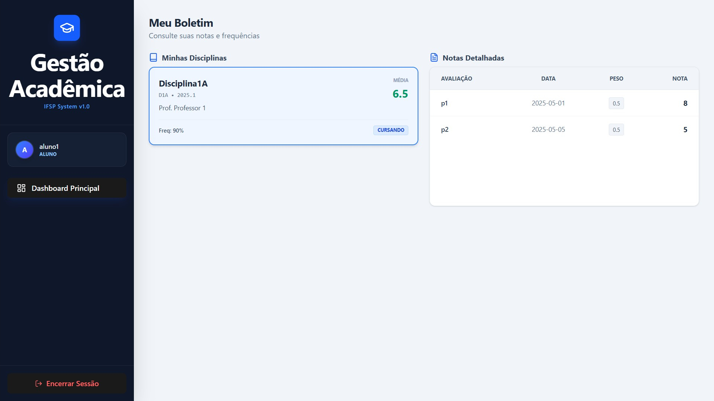

Sistema de Gestão de Notas de Alunos
Desenvolvimento de uma aplicação web Full Stack para gerenciar o ciclo acadêmico de uma instituição de ensino. O sistema permite o gerenciamento de disciplinas, turmas, matrículas e o lançamento de notas e frequências, com geração de relatórios automatizados. O projeto foca na segurança, integridade de dados e experiência do usuário, separando o acesso em três perfis: Administrador, Professor e Aluno.
O sistema utiliza uma arquitetura RESTful, com o Backend servindo dados em formato JSON para um Frontend desacoplado do tipo Single Page Application.
- Backend: Java com Spring Boot
- Banco de Dados: MySQL
- Frontend: React.js

A interface inicial é a tela de login, após realizar a autenticação, o usuário irá acessar o painel adequado ao nível de seu perfil.
Painel Administrativo

Administradores tem o maior nível de acesso, com o painel permitindo ver, adicionar, modificar e remover: disciplinas, turmas, matrículas e outros usuários.
Painel do Professor

Em seu painel, professores podem acessar cada uma de suas turmas, ver a lista de alunos matriculados e gerenciar suas notas e frequências, além de gerar relatórios automatizados em PDF e XLSX.
Painel do Aluno

Em seu painel, alunos podem ver as disciplinas em que estão matriculados, suas notas e frequências.
Acesse o código fonte e a documentação do projeto:
Repositório